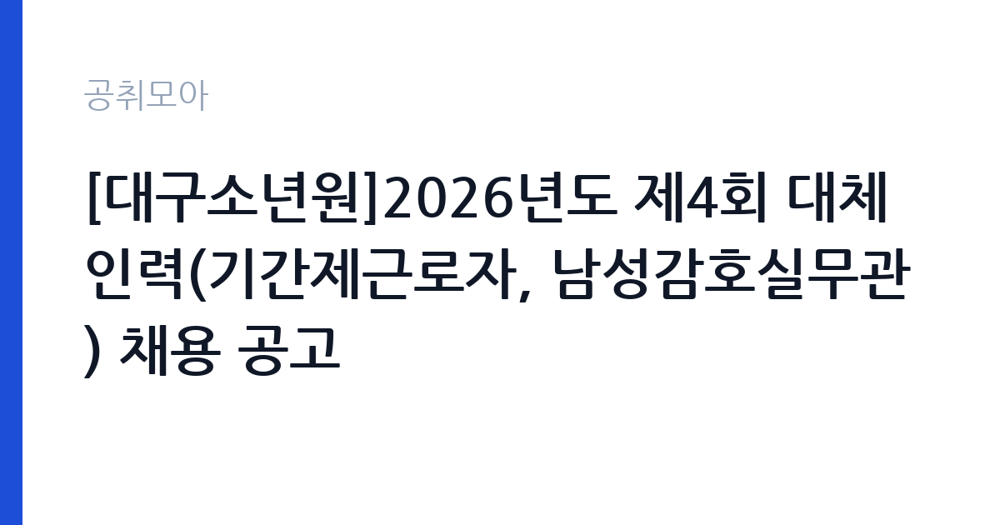

[국가기관] [대구소년원]2026년도 제4회 대체인력(기간제근로자, 남성감호실무관) 채용 공고
법무부 대구소년원 · 대구 · 마감 2026-11-06 (D-8) · 출처 나라일터

한눈에 보는 모집 조건
| 기관 | 법무부 대구소년원 |
|---|---|
| 공고명 | [대구소년원]2026년도 제4회 대체인력(기간제근로자, 남성감호실무관) 채용 공고 |
| 고용형태 | 기간제 |
| 근무지 | 대구 |
| 게시일 | 2026-10-30 |
| 마감일 | 2026-11-06 (D-8) |
지원자격, 이렇게 읽으세요
- 휴직대체 기간제 근로자 1명
- 접수 ~2026-11-06 마감
- 세부 조건은 원문 공고문 확인
기간제 근로자는 근로계약 기간이 정해진 신분입니다. 계약 기간과 갱신 가능 여부가 근로계약서에 명시되며 기간 만료 시 근로관계가 종료됩니다. 결원 보충이나 특정 사업 기간에 맞춰 채용되는 경우가 많아 업무 범위가 명확합니다. 이번 공고는 법무부 대구소년원이 직접 진행하는 자체 전형입니다. 소년원 대체인력은 학력·경력 요건이 높지 않은 대신 신원과 결격사유 확인이 엄격합니다. 범죄 경력과 징계 이력이 확인되고, 채용 전 신체검사와 인성검사를 거치는 경우가 있습니다. 교대·야간 근무가 가능해야 하며, 근무 기간은 대체 대상자의 휴직 기간에 맞춰 정해집니다. 남성 감호 업무는 같은 성별 보호소년 지도 특성상 성별 요건이 붙는 경우가 있습니다. 응시 자격 판단이 애매하면 접수 전에 채용 담당 부서로 문의하는 편이 안전합니다. 응시 자격 판단이 애매하다면 접수 전에 채용 담당 부서로 문의하는 편이 안전합니다. 서류 제출 후에는 소명 기회가 없습니다. 공고문의 응시자격 표를 보면 자격 항목이 여러 줄로 나뉘어 있으므로, 각 줄을 하나씩 체크하며 본인 해당 여부를 표시해 두면 누락을 줄일 수 있습니다.
이 공고의 포인트
이 건은 법무부 대구소년원이 같은 시기에 낸 2개 모집분야 가운데 소년원 대체인력(감호) 직무입니다. 다른 직무 공고와 요건이 다르므로 지원 전에 모집분야 표를 대조해야 합니다. 이 공고의 첫 번째 포인트는 고용 형태입니다. 계약 기간이 정해져 있어 근무 종료 시점이 명확합니다. 그만큼 짧은 기간에 어떤 실적을 남길지가 중요해집니다. 두 번째는 업무 범위가 명확하다는 점입니다. 소년원 대체인력(감호) 직무로 채용되므로 배치 이후 담당 업무가 크게 흔들리지 않습니다. 세 번째는 근무지입니다. 대구 지역 근무로 수도권 공고에 비해 지원자 분포가 넓지 않아 상대적으로 경쟁이 분산되는 경우가 있습니다. 재공고로 올라온 공고라 이전 차수 지원자와의 형평성 기준을 확인할 필요가 있습니다. 같은 직무 공고 중에서는 접수 마감이 가장 빨라 일정을 앞당겨 잡아야 합니다. 다만 선발 인원이 1명으로 많지 않아 자격을 갖춘 지원자가 몰리면 경쟁률이 높아질 수 있습니다.
전형은 어떻게 진행되나
서류전형과 면접전형 외에 직무수행능력 평가가 붙는 경우가 있습니다. 평가 방식은 공고문에 구체적으로 적혀 있으므로 어떤 항목에 배점이 높은지 먼저 파악하십시오. 면접에서는 지원 동기보다 실제 업무 경험에 대한 질문이 많고, 답변의 구체성이 평가를 가릅니다. 전형 일정은 서류 마감 이후 빠르게 진행되므로 연락 가능한 번호를 정확히 기재하고 문자와 메일을 수시로 확인해야 합니다. 최종 단계에서는 결격사유 조회와 신체검사가 진행됩니다. 면접조 편성과 대기 시간이 공지되므로 당일 도착 시간을 여유 있게 잡으십시오.
이런 분께 추천해요
- 교대·야간 근무가 가능한 분
- 청소년 지도나 시설 근무 경험이 있는 분
- 보안·규정 준수를 우선하는 분
지원 전 체크리스트
- 응시자격 요건과 경력 기준을 충족하는가 — 경력은 증명서로 입증해야 합니다
- 계약 기간과 근무 시작일·종료일을 확인했는가
- 제출서류 목록을 모두 준비했는가 — 누락 시 서류 단계에서 탈락합니다
- 접수 마감 2026-11-06 이전에 접수 방식을 확인해 제출했는가
모집 일정과 제출 타이밍
2026-10-30에 공고가 올라왔고 접수는 2026-11-06까지입니다. 남은 기간은 7일이며, 이 기간에 자격증 사본과 경력증명서, 주민등록등본 같은 기본 서류를 모두 준비해야 합니다. 경력증명서는 발급에 며칠이 걸리는 경우가 있으니 가장 먼저 신청하십시오. 접수는 온라인과 우편·방문으로 나뉘는 경우가 많고, 우편 접수는 도착 기준으로 판정되므로 마감일 소인만 믿으면 안 됩니다. 면접 일정은 서류 발표 후 개별 통보되므로 제출 후에도 연락을 받을 수 있도록 유지해야 합니다. 마감 이후에는 어떤 사유로도 접수가 인정되지 않으므로 하루 전 제출을 목표로 하십시오.
직무 이해하기: 국가기관
법무·사법 기관은 재판과 송무, 수사, 교정 업무를 담당합니다. 법원행정처와 각급 법원은 재판 지원과 등기, 가족관계 업무를 운영하며, 법무부는 출입국과 보호, 교정 시설을 관리합니다. 보안과 비밀 유지 요건이 다른 기관보다 엄격합니다. 소년원 대체인력은 보호소년의 생활과 교육을 지원하는 현장 업무를 맡습니다. 교실과 생활관에서 보호소년의 이동을 안내하고, 수업과 직업훈련, 체육 활동을 보조합니다. 생활 지도와 규칙 준수 확인, 야간 당직과 순찰이 업무에 포함되며, 돌발 행동이 발생하면 정해진 절차에 따라 대응합니다. 시설 내 보안 규정이 엄격해 출입과 물품 반입 절차를 지켜야 합니다. 교대 근무가 기본이고, 근무 중에는 휴대전화 사용이 제한됩니다. 이 직무는 담당 구역이 정해져 있어 근무지에 따라 실제 업무 환경이 달라집니다. 업무 강도와 근무 시간대는 부서 배치에 따라 달라지므로 면접에서 확인하는 것이 가장 정확합니다. 이 건의 근무 대상 지역·부서는 원문 기준 '기간제근로자, 남성감호실무관'입니다.
자기소개서 작성 팁
지원서는 규칙을 지킨 경험과 사람을 대하는 태도를 중심으로 쓰십시오. 청소년 지도·교육·봉사 경험이 있다면 구체적으로 적고, 갈등 상황에서 감정을 조절한 사례를 넣으십시오. 교대 근무를 지속할 수 있다는 점과 보안 규정을 준수하겠다는 의사를 밝히십시오. 장기 근무 의사보다 근무 기간 동안의 책임을 강조하는 편이 좋습니다. 구성은 지원 동기, 직무 경험, 기여 방안 순서가 무난합니다. 지원 동기는 법무부 대구소년원의 사업 중 본인이 관심을 가진 부분을 한 가지로 좁혀 서술하고 추상적인 표현은 줄이십시오. 직무 경험은 담당했던 업무와 규모, 결과를 수치로 제시하면 설득력이 올라갑니다. 기여 방안은 입사 후 첫 3개월과 1년 계획으로 나눠 쓰면 준비도가 드러납니다.
면접 준비 포인트
면접에서는 규칙 준수와 상황 대응을 확인합니다. 보호소년이 지시를 따르지 않을 때 어떻게 대응할지, 동료와 역할이 겹칠 때 어떻게 조율할지 묻습니다. 감정적 대응을 피하고 절차와 보고를 지킨다는 점을 분명히 하십시오. 교대 근무 경험과 체력 관리 방식도 답변 소재가 됩니다. 직무 특성상 체력이나 근무 시간에 대한 질문이 나올 수 있으므로 솔직하게 답하고 관리 계획을 함께 제시하십시오. 본인 경험을 말할 때는 기간, 역할, 결과를 순서대로 정리해 두면 질문이 바뀌어도 활용할 수 있습니다.
급여·근무조건 읽는 법
법무부 대구소년원의 구체적인 보수 수치는 이 공고 원문의 처우 항목과 보수표에서 확인해야 합니다. 공시 자료로 확인되지 않은 금액은 이 글에서 추정해 제시하지 않습니다. 알리오 2025년 결산 공시 기준 공공기관 전체 일반정규직 1인당 평균보수는 7,376만 9천원, 신입사원 평균초임은 4,031만 6천원입니다(무기계약직 미포함). 소년원 대체인력은 법무부의 기간제근로자 보수 기준을 따르며, 기본급에 정액급식비와 교대·야간 근무수당이 더해집니다. 계약 기간이 정해져 있어 월 보수와 근무 개월 수를 곱한 총액으로 비교해야 합니다. 정확한 금액과 수당 항목은 공고문 처우 항목에서 확인하십시오. 2026년 적용 최저임금은 시급 10,320원, 월 환산 2,156,880원(주 40시간·209시간 기준)입니다. 고용노동부 고시 제2025-47호로 확정된 금액입니다. 공고문에 금액이 제시되지 않은 항목은 원문 보수표나 처우 설명에서 확인해야 하며 확인되지 않은 수치는 쓰지 않는 것이 원칙입니다. 비교할 때는 월 급여뿐 아니라 상여·명절휴가비·복지포인트·초과근무수당까지 포함한 연간 총액으로 계산하십시오. 기간제라면 계약 기간 동안의 총액을, 무기계약이라면 호봉 상승과 정년까지의 누적 소득을 기준으로 판단하는 편이 정확합니다.
자주 묻는 질문
- 선발 인원은 몇 명인가요?
공고문 기준 1명입니다. 직종별로 인원이 나뉘는 경우가 있으니 모집분야 항목을 함께 확인하십시오. - 근무지는 어디인가요?
대구 지역의 법무부 대구소년원 소속 근무지입니다. 세부 주소와 출퇴근 조건은 원문 공고문에서 확인할 수 있습니다. - 보수는 얼마인가요?
채용 신분(기간제)과 기관 임금 규정에 따라 정해지며 구체적인 금액은 공고문 처우 항목에 제시됩니다. 금액이 공개되지 않은 경우에는 원문의 보수표를 확인하십시오.
함께 보면 좋은 공고
[국가기관] [대구소년원]2026년 제1회 운전직(운전서기보) 공무원 경력경쟁채용시험 공고 — 마감 2026-11-09[국가기관] 창원지방법원 공무직 근로자(환경관리원) 채용 공고 — 마감 2026-11-09[국가기관] 2026년도 제1회 예천우체국 기간제 우정실무원 채용 공고 — 마감 2026-11-02출처: 나라일터 공개정보를 바탕으로 공취모아가 정리한 안내글입니다. 모집 조건·일정은 변경될 수 있으니 지원 전 반드시 원문 공고문을 확인하세요. 본 글은 정보 제공용이며 합격을 보장하지 않습니다.